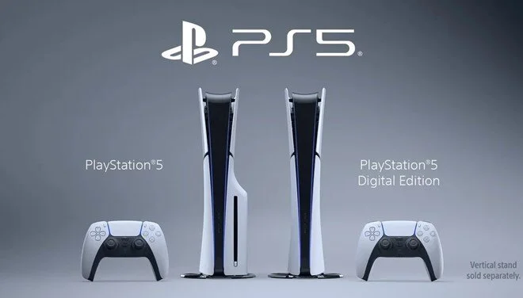

Sony şu ana kadar 46,6 milyondan fazla PS5 konsolu sattı
Sony, PlayStation 5 oyun konsollarının çıkış yaptığı Kasım 2020 tarihinden bu yana 46.6 milyon adet satıldığını açıkladı. Öte yandan Marvel's Spider-Man 2 çıkış yaptıktan 11 gün sonra 5 milyon adet sattı.
Sony, PlayStation 5 satışları söz konusu olduğunda gişe rekorları kıran bir çeyrek geçirdi. Şirket, 30 Eylül'de sona eren ikinci mali çeyreğinde 4,9 milyon PS5 satarak toplam satılan konsol sayısını 46,6 milyona çıkardı.
Sony, ilk çıkış yaptığında tedarik zinciri sorunları nedeniyle konsola gelen talepleri karşılayamadı ancak geçen yıl üretimi artırarak Kasım 2020'de satışa çıkmasından bu yana 40 milyondan fazla PS5 konsolu sattığını duyurdu.
16.8 MİLYON DAHA SATMASI GEREK
Ancak Sony'nin bu mali yıl için belirlediği 25 milyon PS5 sevkiyatı hedefine ulaşabilmesi için 16,8 milyon adet daha satması gerekecek.
Sony'nin 2022 mali yılının tamamında yalnızca 19,1 milyon PS5 konsolu sattığı düşünüldüğünde bu çok büyük bir rakam.
SLİM MODELİYLE SATIŞLARDA ARTIŞ BEKLENİYOR
Ancak Reuters'a göre Sony Başkanı Hiroki Totoki, bu hedefe şirketin çok kolay bir şekilde ulaşabileceğinden emin.
Şirket, PS5 Slim modellerinin bu ay piyasaya çıkmasıyla birlikte satışlarda bir artış bekliyor.
SPIDER-MAN 2 İLK 11 GÜNDE 5 MİLYON SATTI
Sony, donanım satışlarına ek olarak, ikinci çeyrekte 67,6 milyon oyun sattığını, ancak bunların sadece 4,7 milyonunun birinci parti oyunlar olduğunu bildirdi.
Marvel's Spider-Man 2'nin ilk 11 günde 5 milyon adet satarak 80 günde 9 milyon kopya sattı.